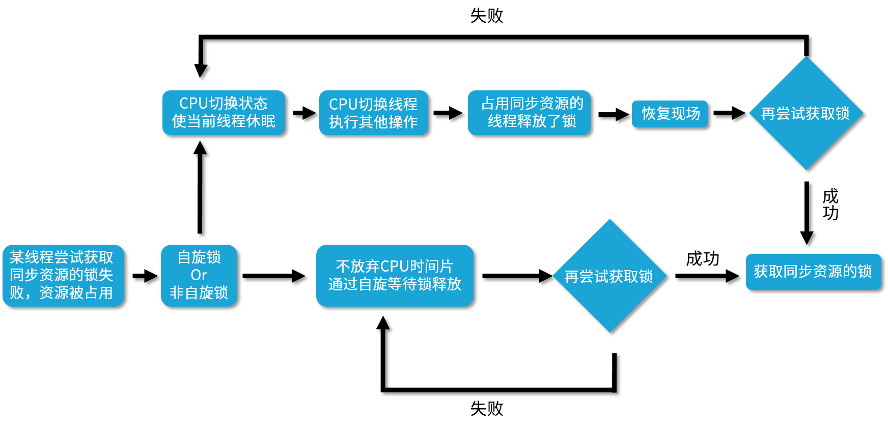

- 00 由点及面，搭建你的 Java 并发知识网.md
- 01 为何说只有 1 种实现线程的方法？.md
- 02 如何正确停止线程？为什么 volatile 标记位的停止方法是错误的？.md
- 03 线程是如何在 6 种状态之间转换的？.md
- 04 waitnotifynotifyAll 方法的使用注意事项？.md
- 05 有哪几种实现生产者消费者模式的方法？.md
- 06 一共有哪 3 类线程安全问题？.md
- 07 哪些场景需要额外注意线程安全问题？.md
- 08 为什么多线程会带来性能问题？.md
- 09 使用线程池比手动创建线程好在哪里？.md
- 10 线程池的各个参数的含义？.md
- 11 线程池有哪 4 种拒绝策略？.md
- 12 有哪 6 种常见的线程池？什么是 Java8 的 ForkJoinPool？.md
- 13 线程池常用的阻塞队列有哪些？.md
- 14 为什么不应该自动创建线程池？.md
- 15 合适的线程数量是多少？CPU 核心数和线程数的关系？.md
- 16 如何根据实际需要，定制自己的线程池？.md
- 17 如何正确关闭线程池？shutdown 和 shutdownNow 的区别？.md
- 18 线程池实现“线程复用”的原理？.md
- 19 你知道哪几种锁？分别有什么特点？.md
- 20 悲观锁和乐观锁的本质是什么？.md
- 21 如何看到 synchronized 背后的“monitor 锁”？.md
- 22 synchronized 和 Lock 孰优孰劣，如何选择？.md
- 23 Lock 有哪几个常用方法？分别有什么用？.md
- 24 讲一讲公平锁和非公平锁，为什么要“非公平”？.md
- 25 读写锁 ReadWriteLock 获取锁有哪些规则？.md
- 26 读锁应该插队吗？什么是读写锁的升降级？.md
- 27 什么是自旋锁？自旋的好处和后果是什么呢？.md
- 28 JVM 对锁进行了哪些优化？.md
- 29 HashMap 为什么是线程不安全的？.md
- 30 ConcurrentHashMap 在 Java7 和 8 有何不同？.md
- 31 为什么 Map 桶中超过 8 个才转为红黑树？.md
- 32 同样是线程安全，ConcurrentHashMap 和 Hashtable 的区别.md
- 33 CopyOnWriteArrayList 有什么特点？.md
- 34 什么是阻塞队列？.md
- 35 阻塞队列包含哪些常用的方法？add、offer、put 等方法的区别？.md
- 36 有哪几种常见的阻塞队列？.md
- 37 阻塞和非阻塞队列的并发安全原理是什么？.md
- 38 如何选择适合自己的阻塞队列？.md
- 39 原子类是如何利用 CAS 保证线程安全的？.md
- 40 AtomicInteger 在高并发下性能不好，如何解决？为什么？.md
- 41 原子类和 volatile 有什么异同？.md
- 42 AtomicInteger 和 synchronized 的异同点？.md
- 43 Java 8 中 Adder 和 Accumulator 有什么区别？.md
- 44 ThreadLocal 适合用在哪些实际生产的场景中？.md
- 45 ThreadLocal 是用来解决共享资源的多线程访问的问题吗？.md
- 46 多个 ThreadLocal 在 Thread 中的 threadlocals 里是怎么存储的？.md
- 47 内存泄漏——为何每次用完 ThreadLocal 都要调用 remove()？.md
- 48 Callable 和 Runnable 的不同？.md
- 49 Future 的主要功能是什么？.md
- 50 使用 Future 有哪些注意点？Future 产生新的线程了吗？.md
- 51 如何利用 CompletableFuture 实现“旅游平台”问题？.md
- 52 信号量能被 FixedThreadPool 替代吗？.md
- 53 CountDownLatch 是如何安排线程执行顺序的？.md
- 54 CyclicBarrier 和 CountdownLatch 有什么异同？.md
- 55 Condition、object.wait() 和 notify() 的关系？.md
- 56 讲一讲什么是 Java 内存模型？.md
- 57 什么是指令重排序？为什么要重排序？.md
- 58 Java 中的原子操作有哪些注意事项？.md
- 59 什么是“内存可见性”问题？.md
- 60 主内存和工作内存的关系？.md
- 61 什么是 happens-before 规则？.md
- 62 volatile 的作用是什么？与 synchronized 有什么异同？.md
- 63 单例模式的双重检查锁模式为什么必须加 volatile？.md
- 64 你知道什么是 CAS 吗？.md
- 65 CAS 和乐观锁的关系，什么时候会用到 CAS？.md
- 66 CAS 有什么缺点？.md
- 67 如何写一个必然死锁的例子？.md
- 68 发生死锁必须满足哪 4 个条件？.md
- 69 如何用命令行和代码定位死锁？.md
- 70 有哪些解决死锁问题的策略？.md
- 71 讲一讲经典的哲学家就餐问题.md
- 72 final 的三种用法是什么？.md
- 73 为什么加了 final 却依然无法拥有“不变性”？.md
- 74 为什么 String 被设计为是不可变的？.md
- 75 为什么需要 AQS？AQS 的作用和重要性是什么？.md
- 76 AQS 的内部原理是什么样的？.md
- 77 AQS 在 CountDownLatch 等类中的应用原理是什么？.md
- 78 一份独家的 Java 并发工具图谱.md
27 什么是自旋锁？自旋的好处和后果是什么呢？
在本课时我们主要讲解什么是自旋锁？以及使用自旋锁的好处和后果分别是什么呢？
什么是自旋
首先，我们了解什么叫自旋？“自旋”可以理解为“自我旋转”，这里的“旋转”指“循环”，比如 while 循环或者 for 循环。“自旋”就是自己在这里不停地循环，直到目标达成。而不像普通的锁那样，如果获取不到锁就进入阻塞。
对比自旋和非自旋的获取锁的流程
下面我们用这样一张流程图来对比一下自旋锁和非自旋锁的获取锁的过程。

首先，我们来看自旋锁，它并不会放弃 CPU 时间片，而是通过自旋等待锁的释放，也就是说，它会不停地再次地尝试获取锁，如果失败就再次尝试，直到成功为止。
我们再来看下非自旋锁，非自旋锁和自旋锁是完全不一样的，如果它发现此时获取不到锁，它就把自己的线程切换状态，让线程休眠，然后 CPU 就可以在这段时间去做很多其他的事情，直到之前持有这把锁的线程释放了锁，于是 CPU 再把之前的线程恢复回来，让这个线程再去尝试获取这把锁。如果再次失败，就再次让线程休眠，如果成功，一样可以成功获取到同步资源的锁。
可以看出，非自旋锁和自旋锁最大的区别，就是如果它遇到拿不到锁的情况，它会把线程阻塞，直到被唤醒。而自旋锁会不停地尝试。那么，自旋锁这样不停尝试的好处是什么呢？
自旋锁的好处
首先，阻塞和唤醒线程都是需要高昂的开销的，如果同步代码块中的内容不复杂，那么可能转换线程带来的开销比实际业务代码执行的开销还要大。
在很多场景下，可能我们的同步代码块的内容并不多，所以需要的执行时间也很短，如果我们仅仅为了这点时间就去切换线程状态，那么其实不如让线程不切换状态，而是让它自旋地尝试获取锁，等待其他线程释放锁，有时我只需要稍等一下，就可以避免上下文切换等开销，提高了效率。
用一句话总结自旋锁的好处，那就是自旋锁用循环去不停地尝试获取锁，让线程始终处于 Runnable 状态，节省了线程状态切换带来的开销。
AtomicLong 的实现
在 Java 1.5 版本及以上的并发包中，也就是 java.util.concurrent 的包中，里面的原子类基本都是自旋锁的实现。
比如我们看一个 AtomicLong 的实现，里面有一个 getAndIncrement 方法，源码如下：
public final long getAndIncrement() {
return unsafe.getAndAddLong(this, valueOffset, 1L);
}
可以看到它调用了一个 unsafe.getAndAddLong，所以我们再来看这个方法：
public final long getAndAddLong (Object var1,long var2, long var4){
long var6;
do {
var6 = this.getLongVolatile(var1, var2);
} while (!this.compareAndSwapLong(var1, var2, var6, var6 + var4));
return var6;
}
在这个方法中，它用了一个 do while 循环。这里就很明显了：
do {
var6 = this.getLongVolatile(var1, var2);
}
while (!this.compareAndSwapLong(var1, var2, var6, var6 + var4));
这里的 do-while 循环就是一个自旋操作，如果在修改过程中遇到了其他线程竞争导致没修改成功的情况，就会 while 循环里进行死循环，直到修改成功为止。
自己实现一个可重入的自旋锁
下面我们来看一个自己实现可重入的自旋锁。
代码如下所示：
package lesson27;
import java.util.concurrent.atomic.AtomicReference;
import java.util.concurrent.locks.Lock;
/**
* 描述： 实现一个可重入的自旋锁
*/
public class ReentrantSpinLock {
private AtomicReference<Thread> owner = new AtomicReference<>();
//重入次数
private int count = 0;
public void lock() {
Thread t = Thread.currentThread();
if (t == owner.get()) {
++count;
return;
}
//自旋获取锁
while (!owner.compareAndSet(null, t)) {
System.out.println("自旋了");
}
}
public void unlock() {
Thread t = Thread.currentThread();
//只有持有锁的线程才能解锁
if (t == owner.get()) {
if (count > 0) {
--count;
} else {
//此处无需CAS操作，因为没有竞争，因为只有线程持有者才能解锁
owner.set(null);
}
}
}
public static void main(String[] args) {
ReentrantSpinLock spinLock = new ReentrantSpinLock();
Runnable runnable = new Runnable() {
@Override
public void run() {
System.out.println(Thread.currentThread().getName() + "开始尝试获取自旋锁");
spinLock.lock();
try {
System.out.println(Thread.currentThread().getName() + "获取到了自旋锁");
Thread.sleep(4000);
} catch (InterruptedException e) {
e.printStackTrace();
} finally {
spinLock.unlock();
System.out.println(Thread.currentThread().getName() + "释放了了自旋锁");
}
}
};
Thread thread1 = new Thread(runnable);
Thread thread2 = new Thread(runnable);
thread1.start();
thread2.start();
}
}
这段代码的运行结果是：
...
自旋了
自旋了
自旋了
自旋了
自旋了
自旋了
自旋了
自旋了
Thread-0释放了了自旋锁
Thread-1获取到了自旋锁
前面会打印出很多“自旋了”，说明自旋期间，CPU依然在不停运转。
缺点
那么自旋锁有没有缺点呢？其实自旋锁是有缺点的。它最大的缺点就在于虽然避免了线程切换的开销，但是它在避免线程切换开销的同时也带来了新的开销，因为它需要不停得去尝试获取锁。如果这把锁一直不能被释放，那么这种尝试只是无用的尝试，会白白浪费处理器资源。也就是说，虽然一开始自旋锁的开销低于线程切换，但是随着时间的增加，这种开销也是水涨船高，后期甚至会超过线程切换的开销，得不偿失。
适用场景
所以我们就要看一下自旋锁的适用场景。首先，自旋锁适用于并发度不是特别高的场景，以及临界区比较短小的情况，这样我们可以利用避免线程切换来提高效率。
可是如果临界区很大，线程一旦拿到锁，很久才会释放的话，那就不合适用自旋锁，因为自旋会一直占用 CPU 却无法拿到锁，白白消耗资源。
© 2019 - 2023 Liangliang Lee. Powered by gin and hexo-theme-book.